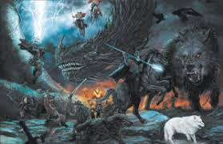

Presagios del Ragnarök
Los presagios del Ragnarök incluyen el largo y gélido invierno conocido como *Fimbulvetr*, cuando tres inviernos consecutivos llegarán sin un verano intermedio. Durante este tiempo, habrá caos, guerras y el colapso de las normas sociales. Fenrir, el lobo gigante, se liberará de sus ataduras, y Jörmungandr, la Serpiente de Midgard, se alzará del océano.
El Inicio de la Batalla
El Ragnarök comenzará cuando los gigantes de fuego, liderados por Surt, marchen desde Muspelheim hacia Asgard. Loki, liberado de sus cadenas, guiará a las fuerzas del caos. Los dioses, liderados por Odín, reunirán a sus ejércitos para enfrentarlos en el campo de batalla de Vigrid.
Eventos Principales
Los enfrentamientos más épicos incluyen el duelo entre Thor y Jörmungandr, donde ambos perecerán; la batalla entre Odín y Fenrir, en la que Odín será devorado; y el enfrentamiento final entre Surt y los dioses, que culminará en un incendio que destruirá el mundo.
El Renacimiento
Tras la destrucción, un nuevo mundo surgirá del océano. Los pocos dioses supervivientes, como Balder y Höðr, se reunirán en Idavoll, un campo verde. Dos humanos, Líf y Lífthrasir, sobrevivirán escondidos en el árbol Yggdrasil y repoblarán el mundo. Este nuevo comienzo será un símbolo de esperanza y renovación.